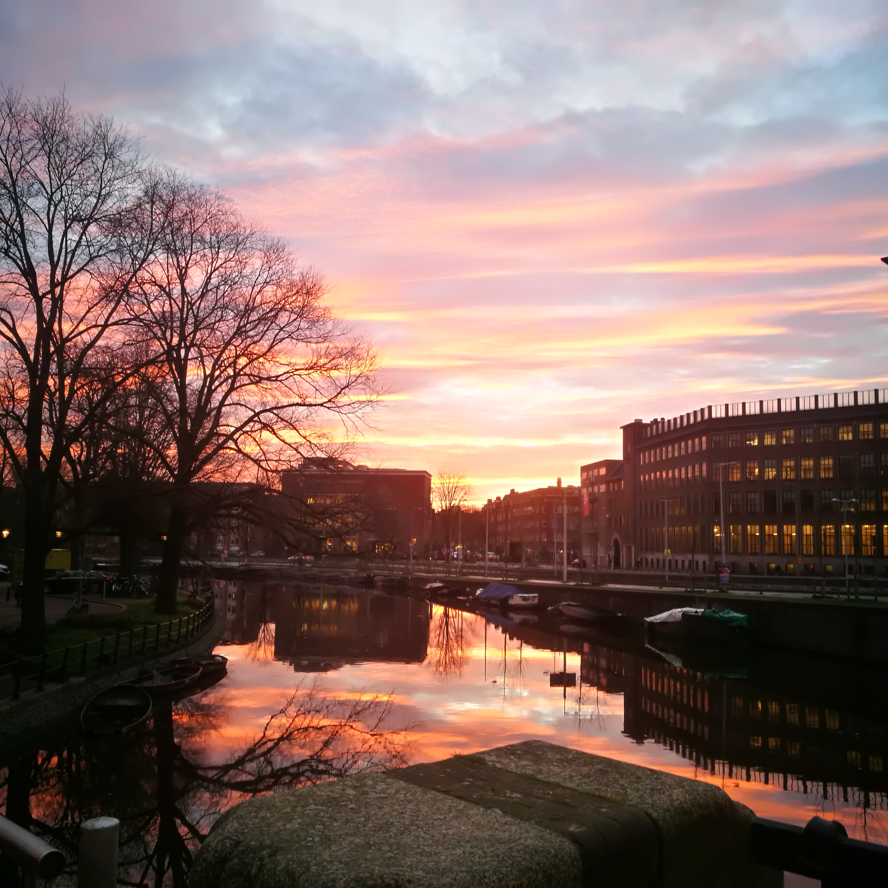
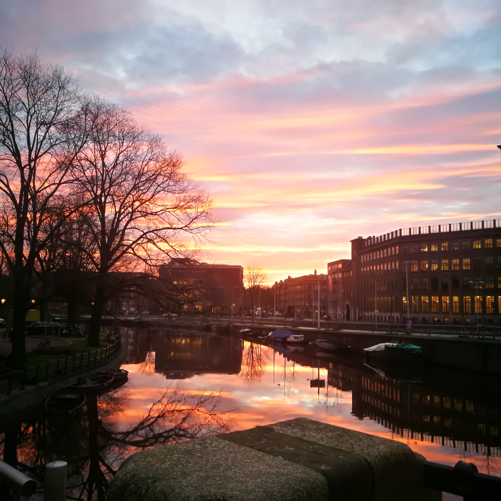

Wie ben ik?
Ik ben Nadine Baylon en ik kom uit de Filipijnen. Ik ben 15 jaar oud en ben jarig op 6 oktober. Ik ben intereseerd met fotography en ik hou van foto's maken, meestal over natuur. Ik zit momenteel in 3vwo en woon al ongeveer drie jaren in Nederland. Ik heb familieleden die wonen in verschillende continenten en ze betekenen veel voor mij. Ik dans graag en wil meer doen met mijn talent. Ik hou van allerlei soorten honden en eten. Onderaan zie je foto's die ik heb gemaakt in de Filipijnen en hier in Nederland. Dat was het voor nu, nog veel plezier met de andere pagina's.
 
